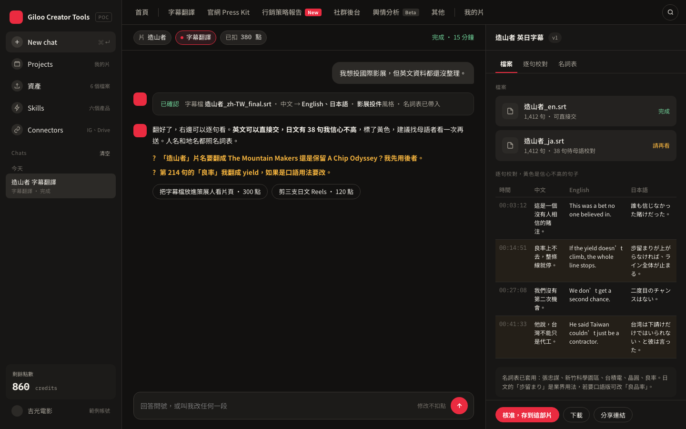
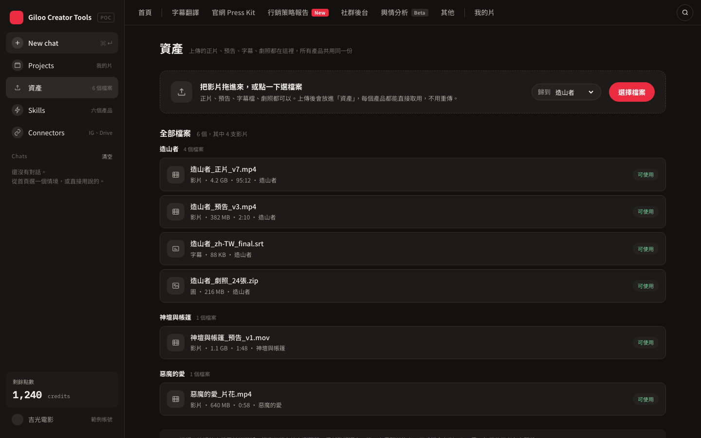

The five tools
Most jobs pull two or three of these and hand back one finished thing. Here is everything that is in there.
大部分的活會用到其中兩三個，最後交給你一份做完的東西。以下是全部。

Transcribe from the audio, translate, set the timing, apply your glossary, and flag the lines a native speaker should read before you send it.
從聲音聽打、翻譯、上時間軸、套用你的名詞表，並標出送出前該找母語者看的句子。
A one-film site you can send to anyone, a private screener behind a password and a watermark, and a kit a programmer can download.
一個可以寄給任何人的單片網站、一個有密碼和浮水印的私人試片頁，還有策展人可以下載的 Press Kit。
Which markets first and why, films like yours and how they travelled, the festivals and buyers worth a first email, and what to do next week.
先做哪個市場、為什麼，跟你相似的片怎麼走出去，值得寄第一封信的影展和買家，還有下週該做什麼。
It watches the film, finds the three moments that actually land, cuts them vertical, writes the captions in two languages, and lays out a schedule you approve.
它會看片，找出三個真的打中人的片刻，剪成直式，寫中英文案，排好一份你按核准就能發的時程。
Who is already talking about your subject, on which platform, in which language, and which of those groups would actually show up for a screening. We are rebuilding this one and it will open to early users first.
誰已經在談你的題目、在哪個平台、用什麼語言，以及哪一群人真的會來看放映。這個正在重做，會先開放給第一批使用者。

Upload the cut, the trailer, subtitles and stills once. Every tool reads from the same shelf, so you never send the same file twice.
正片、預告、字幕、劇照上傳一次。每個工具都從同一個架子上拿，同一個檔案不用傳第二次。
Maybe this is already your week
How it works
What we heard
A film of ours leaked from a platform once. Since then I use one paid secure platform, and I check it again before every single submission.
我們有一部片在平台上外流過。從那之後只用一個要付錢的安全平台，而且每次送件前都再確認一遍。
Sales agent銷售代理I spent an hour on a festival website just to find out whether they take films under 45 minutes. It was in a PDF in the footer.
我為了確認一個影展收不收 45 分鐘以下的片，翻官網翻了一小時。規定藏在頁尾的 PDF 裡。
Director導演What I am afraid of is a report that reads well and is quietly wrong. I would rather see two hundred you have checked than five thousand you guessed.
我怕的是那種讀起來很合理，但其實是錯的報告。我寧可你給我兩百筆查證過的，也不要五千筆用猜的。
Producer製片The film took three years. It was visible for about three weeks. That gap is the whole problem.
片子拍了三年，被看見大概三週。那個落差就是整個問題。
Director導演Frequently asked
Get early access
A real person reads every one of these. If you are at Busan this week, say so and we will find twenty minutes.
每一封都是真人看的。如果你這週在釜山，寫一句，我們找二十分鐘當面聊。